Criação da Máquina
Conversão da Chave
Acesso Putty
WinSCP
TUTORIAL AWS
Passo Anterior:
Acessando a máquina através do Putty
WinSCP:
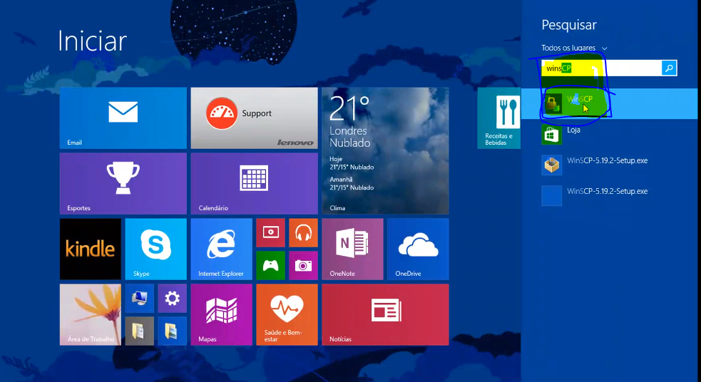
Chame o programa “WinSCP”.
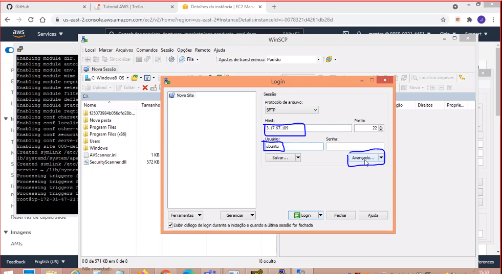
No campo "Host" copie e cole o endereço IP da máquina. No campo "Usuário" digite "ubuntu". Clique em “Avançado”.
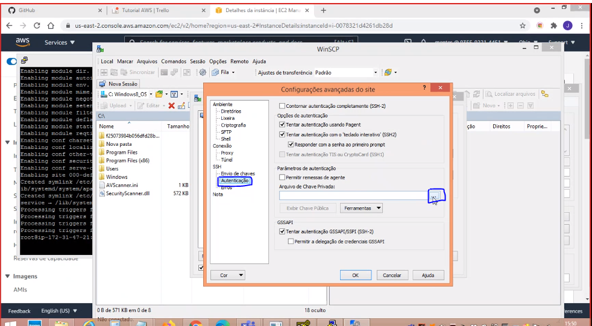
Clique em “SSH”, depois em “Autenticação”. Em “Arquivo de Chave Privada”, clique em "..." para achar seu arquivo.
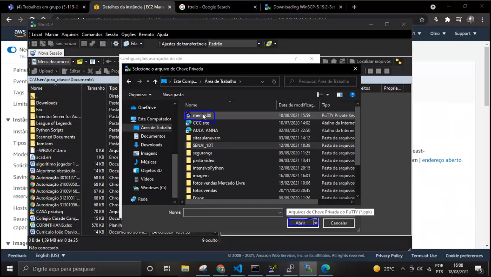
Procure seu arquivo convertido para .ppk e selecione-o. Clique em “Abrir”.
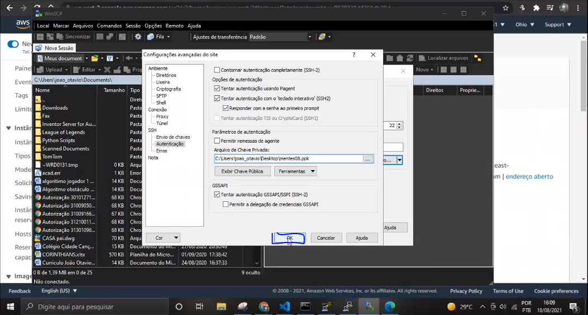
Clique em “OK”.
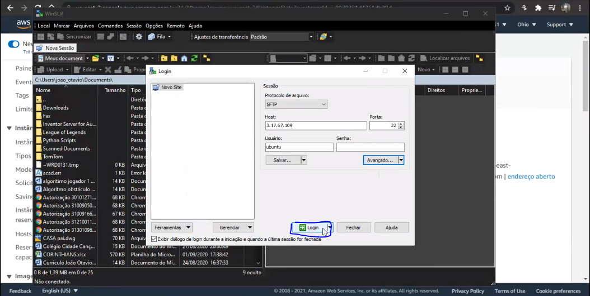
Clique em “Login”.
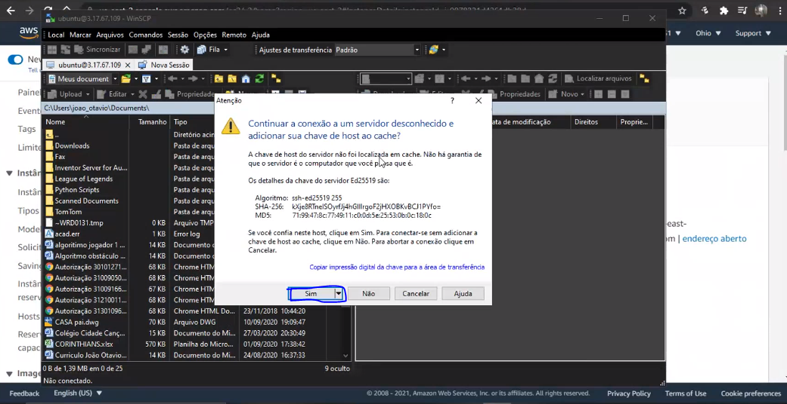
Clique em “Sim” para dar continuidade no acesso.
Clique em "..." para encontrar a pasta “ubuntu”.
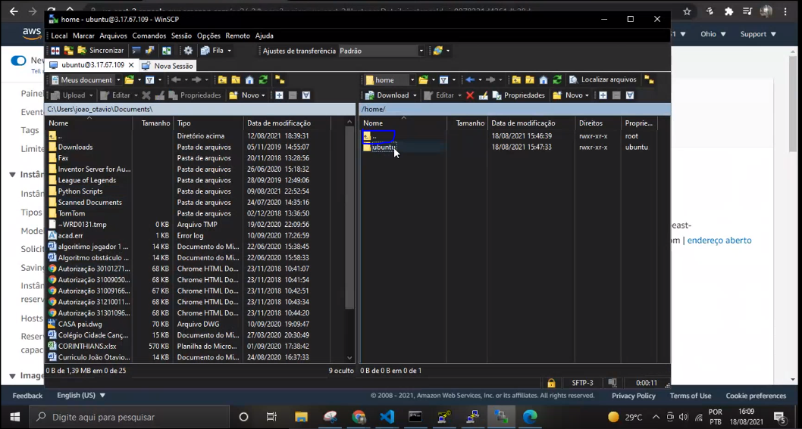
Clique em “ubuntu”.
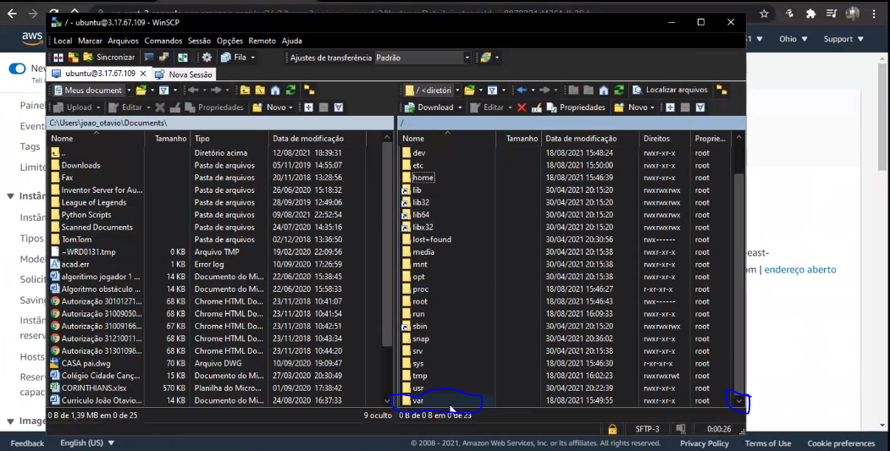
Clique na pasta “var”.
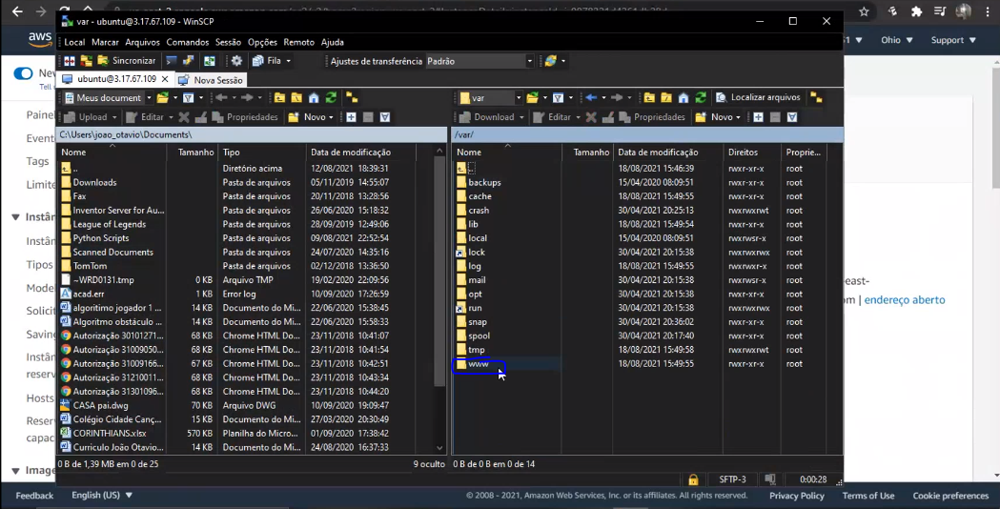
Clique em “www”.
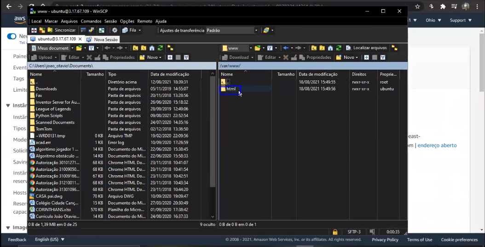
Clique em “html”. Agora é só arrastar o arquivo da esquerda para a direita.
Passo Anterior:
Acessando a máquina através do Putty